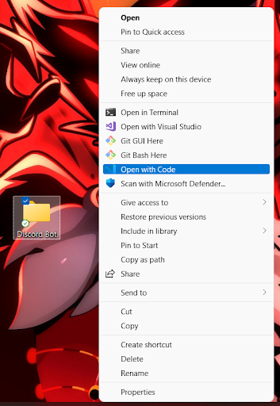
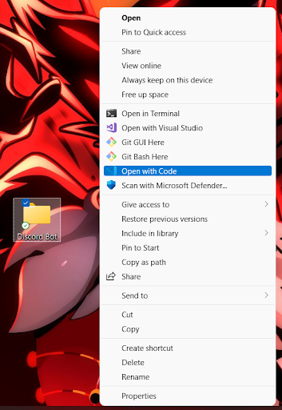

Getting the bot online
Here’s where the fun part happens. First you will need to install Node.js and follow the install instructions. Then, install a code editor, I suggest Visual Studio Code.


Next, create a folder and open it with Visual Studio Code by right clicking
 

Once opened, create a file called “index.js”. This will be where you write the code


We will now install discord.js. At the top of your screen you will see an option called “terminal”. Press on this option and open a new terminal.

At the bottom of your screen, in the terminal, type “npm install discord.js”. Npm is a tool that allows you to install thousands of libraries but for now, we’ll only be installing the Discord JavaScript library. This will add multiple files to your folder, but you can ignore them and open your index.js file by clicking on it.


Now we can begin coding! First you’ll need to import the discord.js package by typing “const {Client, Events, GatewayIntentBits} = require(‘discord.js’);”
Next we’ll add intents to allow our bot to interface with specific events in Discord. Add “const client = new Client({intents:[GatewayIntentBits.Guilds, GatewayIntentBits.GuildMessages, GatewayIntentBits.MessageContent]});” on a new line beneath the first.
Now, we’ll login to our bot and bring it online. Remember your bot’s token from earlier? We’ll use that to log into our bot and bring it online for the first time! Add “client.login(“YOUR TOKEN HERE”);” to the very end of the code, and be sure to replace “your token here” with your token, making sure it is surrounded by double quotations.

Back in the terminal, type “node index.js” Your bot should appear online in your server! However, it won’t be doing much yet, you’ll have to add some commands.

We’ll first create a message in your terminal so you know your bot successfully connected to Discord. For this we’ll use the Events constant we created earlier and use it to check for when the bot has successfully connected. Add “client.once(Events.ClientReady, c => {});” before our bot’s login. Events.ClientReady lets our code know when the Client (the bot) has achieved a successful connection.

You’ll also notice the “c” that we added into the code. We use 'c' for the event parameter to keep it separate from the already defined 'client'. Inside of the curly brackets is where we’ll place our code to run and we’ll be sending a message in the terminal using the “console.log” function. Inside of the curly brackets, add “console.log(`${c.user.tag} is now connected to Discord!`);”.

Now when you use the “node index.js” command you’ll receive a message in your terminal telling you that the bot is connected to Discord.

Congratulations! Your bot is now online!